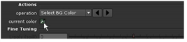

The Primatte keyer includes a quick “Auto-Compute” option that evaluates your image and determines a good baseline key. From there, you can easily tweak the settings and generate an acceptable matte.
The two examples in this section show how to pull a key with the Auto-Compute option (method 1), and also how to manually sample a color from the screen background and build your key from there (method 2).
| 1. | In the project file, locate the node tree labeled “Keying with Primatte,” and make sure a Viewer is attached to the Reformat1 node. |
| 2. | Choose Keyer > Primatte to insert the keyer between the foreground image and the Viewer. |
| 3. | Drag the bg connector from Primatte1 to the Reformat2 node, which supplies the background image for this example. The fg connector should be attached to Reformat1. |
| 4. | Move the time slider to frame 50, and click the Auto-Compute button inside the Primatte1 control panel. |

That’s it. You’re done... well, nearly done. We need a “free-floating” goldfish, but the reflections in the aquarium glass clearly indicate “captivity.”
A garbage matte easily removes the reflections, and you’ll learn how to do that later in the section on rotoscoping. For now, let’s keep working with Primatte.
As you’ve seen, Primatte’s auto-compute option can quickly pull keys on certain images. However, you should also know how to pull and tweak keys manually. You might, for example, need more control over the transparency of the fins on the goldfish.
| 1. | Continuing from the previous example, open the Primatte1 control panel. |
| 2. | Click the “undo” button at the top of the control panel to step back to the previous state of the Primatte1 node. Or, you can also delete the current Primatte1 node and insert a new one. |
| 3. | Scroll down through the Primatte options and set the keying operation to Select BG Color. |
| 4. | The current color chip should display the eyedropper icon. If it doesn’t, click on the color chip to toggle the eyedropper. |

| 5. | Hold down the Ctrl+Shift keys (Mac users, hold down Command+Shift) and drag - or scrub - over a portion of the greenscreen in the image displayed in the Viewer. |
This returns an average color-pick of the sampled pixels. If you want a color pick from a single pixel, press Ctrl or Command and click once over the greenscreen. After you pick, you can clear the red square by Ctrl- or Command-clicking again.
| 6. | Press A over the Viewer to toggle to the alpha channel display. Looks like the aquarium is not as clean as we thought. Our color pick gave us a fairly noisy key, so let’s clean it up. |
Now you’ll sample a few areas of the image to “push” selected pixels to one of three areas: the transparent matte, the opaque subject, or the semi-transparent part of the matte.
| 7. | In the Primatte1 control panel, change the keying operation to Clean BG Noise. |

| 8. | Press Ctrl+Shift or Command+Shift and drag a small square over the dark area in the lower-right corner of the image. |
This second color sample cleans the background by “pushing” the selected pixels into the transparent area of the matte. You probably need a few more samples to get a better key.

| 9. | Scrub a few small areas in the background, focusing on the gray pixels until the matte improves. |
The background doesn’t need to be solid black. We’re just trying to get a good separation between our foreground subject and the greenscreen background.
| 10. | Change the keying operation to Clean FG Noise. This time, sample areas of gray pixels inside the goldfish. |
One or two small samples should be enough. The color pick pushes the selected pixels to the opaque part of the matte.
You want to keep the gray pixels inside the fins to retain a semi-transparent matte in these areas. If you go too far, you can always press the undo button in the control panel to step back to the previous action.
| 11. | Press A again over the Viewer to toggle to all color channels. Your image should look similar to the example shown below. You may see some detail dropping out from the fins. |

| 12. | Change the keying operation to Restore Detail, and scrub over the fins to bring back some of the edge detail. |
You may get different results than those shown here, depending on the pixel values you sample from the image.
Use Restore Detail to push the selected pixels back toward the opaque part of the matte. Use the Make FG Transparent operation to fine-tune the semi-transparent area.
You could go back and forth, between cleaning the background and foreground, but this usually produces a matte with “crunchy” edges. The goal is to find the balance between foreground and background that produces an acceptable matte for your subject.
Later in this chapter, you’ll use the rotoscoping tools to clean-up this matte and combine this with the image from the next example.
|
|